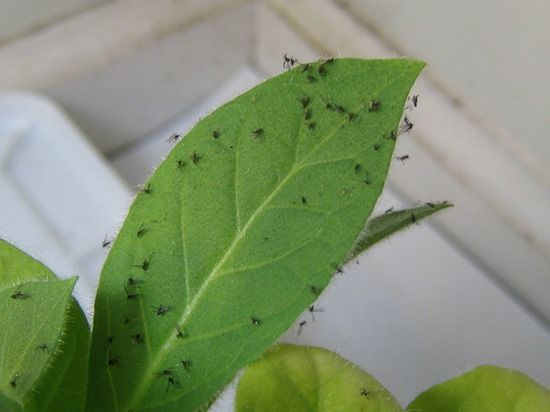
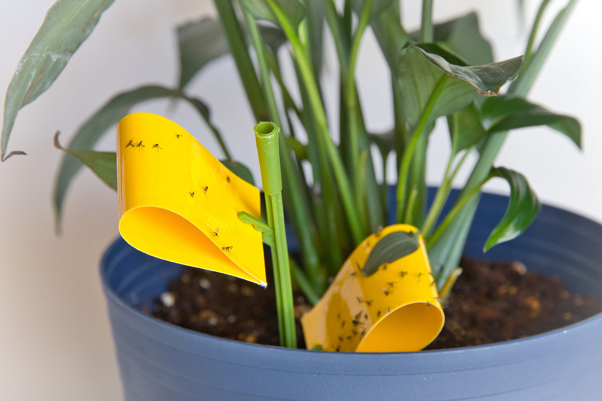
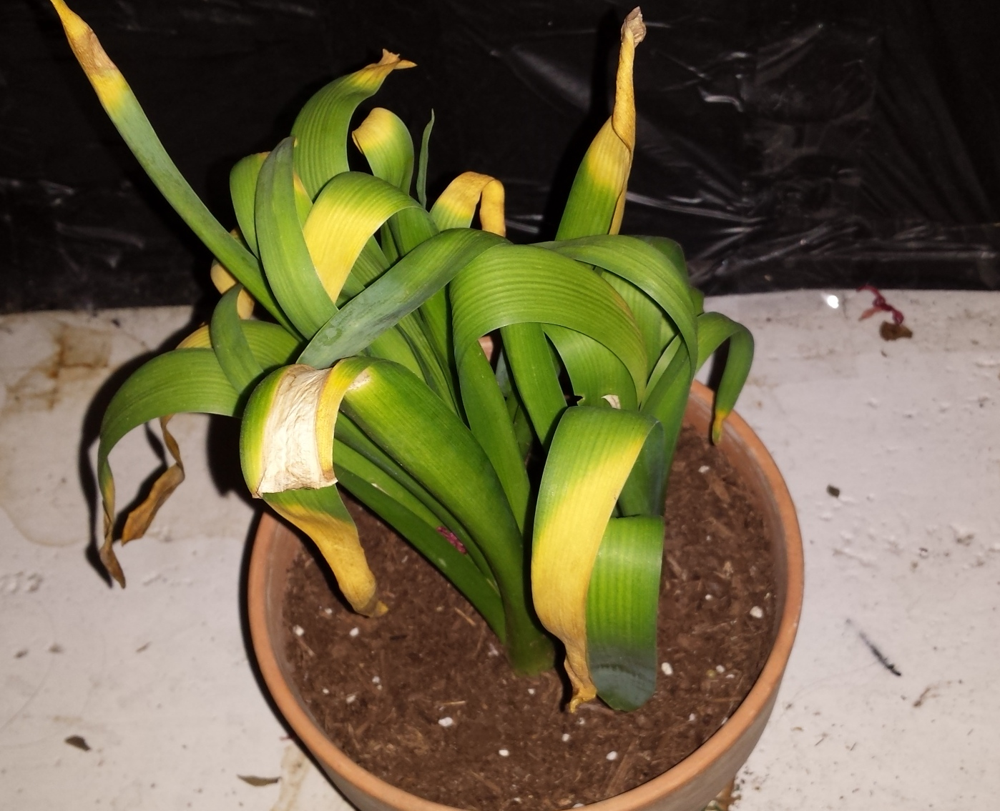
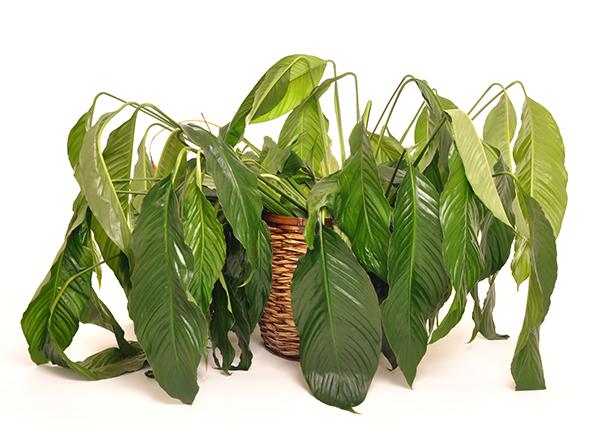
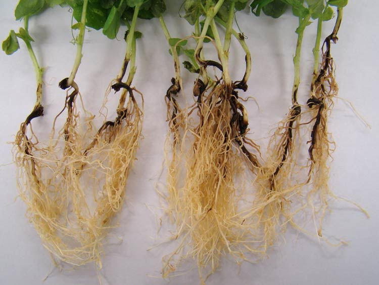
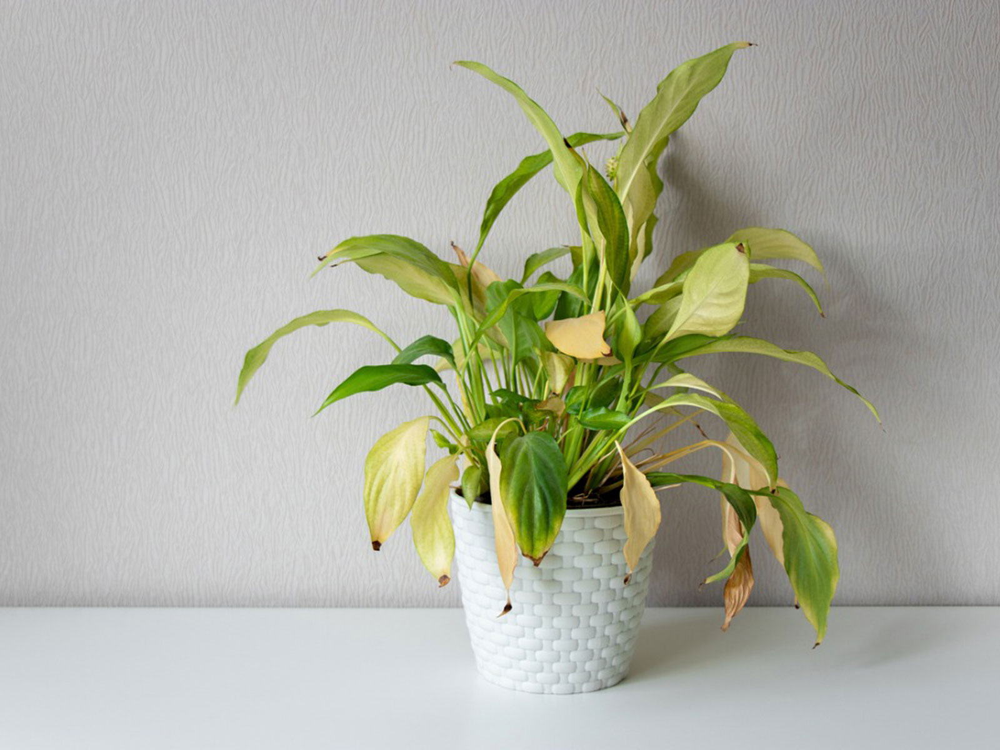
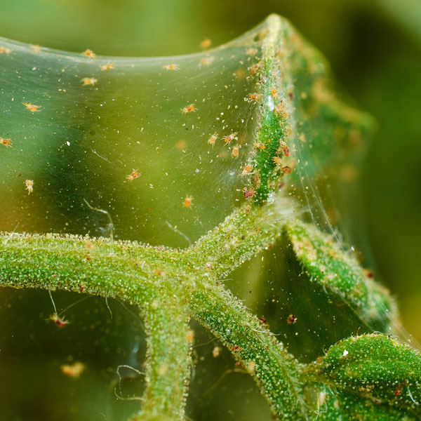
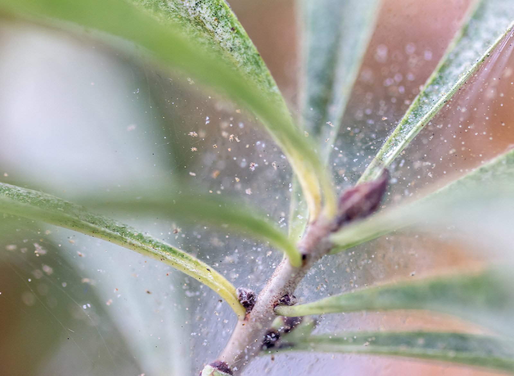

All houseplant owners are bound to run into trouble sometimes! Here's a guide to spotting some common problems which may be plaguing your verdant companions, and some suggestions for handling them. While not an exhaustive list, this guide can show you examples to help spot problems before they become severe.
Fungus gnats are common pests that lay eggs in potting soil around your plants. At first, they're just annoying. Nobody wants gnats flying around their house! Eventually, their reproduction in the soil can start sucking nutrients away from your plant. Trap them with yellow sticky traps and kill the eggs with neem oil (a natural pesticide).
 It can be difficult to tell how much water your plant needs. It also can be difficult to limit watering! You want to care for your plant, so overwatering is a common issue. Overwatered leaves may be yellow and droopy as shown, while underwatered leaves are dry and droopy as well. Make sure to investigate the needs of your specific plant and develop a watering schedule!
 Overwatering becomes an issue for roots as well. Left sitting in moisture for too long, roots can rot! This can cause browning of leaves and eventual plant death. Make sure your pots have good drainage to combat this! If you feel your plant may have root rot, dig it up, trim off any brown/black roots, and repot the healthy ones in fresh, damp soil! Your plant might get shocked and droop for a few days, but it will come back stronger than ever!
 Spidermites are tiny, nasty pests that can be difficult to spot initially. You might see what looks like dust on leaves, but it's actually spidermite webs! If you suspect spidermites, immediately quarantine your plant away from others. Put it in the shower or rinse it in the sink with water at room temperature and low pressure. Think rain! Then, spray your plant with a neem oil solution to kill any remaining spidermite eggs.
 